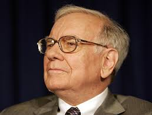

The Oxford dictionary defines investing as “the expenditure of money with the expectation of achieving a profit or material result by putting it into financial plans, shares, or property, or by using it to develop a commercial value.” There are a multitude of different assets, or properties, that you can invest in. There are stocks, bonds, futures, foreign currencies, cryptocurrencies, or even a house! One of the simplest of these is investing in stocks.
Stocks
A stock is a security that represents the ownership of a fraction of a company. This is confusing for most beginning investors. Think of a company as a pie. When you buy a stock, you buy a very small slice of this pie. For example, if you bought a share of Apple, which is currently trading around $165, you would own about 0.000000006% of the company. As the company succeeds, your share increases in value. As the company fails, your share decreases in value. Sometimes you’ll be paid a dividend, or excess profits of the company, for your ownership. The specifics on how those happen get a little complicated, but that’s all you need to know as a beginner.
Diversification
Warren Buffett, one of the most accomplished investors of all time, famously used the quote “Do not put all of your eggs in one basket” in the context of financial diversification. Diversification is choosing multiple companies to buy shares of. If one company fails, you’ll have several others to recoup for this loss. If you drop one basket of eggs, you aren’t completely done for. Let’s look into the rationale of a young investor for example. We’ll call him John. He has heard that investing is a good idea, so he looks for companies to invest in. The year is 2000, and Blockbuster has started to gain steam and popularity. John believes in the values and business model of Blockbuster, so he invests all he can into Blockbuster shares. Over the next few years, Blockbuster grows steadily. John starts to pick out which Lamborghini he wants to drive after he retires at 45. Suddenly, the company starts to decline and declares bankruptcy a few years later. John is forced to sell at nearly a 50% loss.
ETFs
Choosing what to invest in is an incredibly daunting task. It is impossible to predict the future, and extensive knowledge and research is required to have even a chance at choosing the right stock. This is where exchange-traded funds, or ETFs, come into play. An ETF is a “basket” of securities that follow an underlying index, which is an indicator of a certain area of the stock market. A few popular ETFs are SPY, VOO, QQQ, GLD, and EEM. Each of these cover a different financial sector or group of financial sectors. The one we will focus on is SPY, or SPDR S&P 500 ETF. Basically put, the S&P 500 tracks 500 successful companies within the United States. A few of these are likely companies you have heard of, such as Apple, Microsoft, Amazon, Google, Tesla, and others. It covers nearly every sector of business, from technology to finance and energy. As a business decreases in value or has a negative substantial change, it is replaced by the next most valuable company. This makes it an incredibly diversified and safe investment. It will see downturns, such as the financial crisis of 2008 or the beginning of the Covid-19 pandemic, but has provided an average annual gain of 10.5% since its conception in 1957.